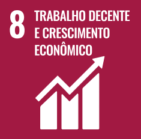
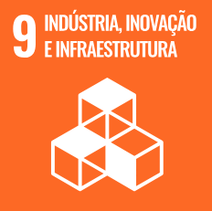
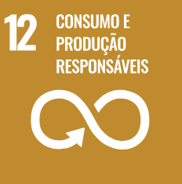

MUITO PRAZER, Somos a FilamentsFiscal3D
Objetivos do Projeto:
- Desenvolvimento de um sistema online para custear peças em 3D
- Otimização dos cálculos relacionados aos componentes 3D
- Implementação através de um website
- Ferramenta eficiente para professores reportarem e registrarem atividades
- Objetivo de agilizar o cálculo de peças e gastos do equipamento de impressão 3D

Sustentabilidade
-

Ao simplificar o processo de custeio de peças em 3D, nosso sistema promove eficiência e transparência, contribuindo para o crescimento econômico sustentável. Facilitamos o acesso a tecnologias avançadas, capacitando professores e alunos a explorarem novas oportunidades no campo da fabricação digital.
-

Estamos comprometidos com a promoção da inovação e da infraestrutura sustentável. Nosso website oferece uma plataforma acessível e intuitiva para que professores possam rapidamente calcular custos de peças em 3D, impulsionando a adoção de tecnologias emergentes e fortalecendo a base de conhecimento em suas instituições.
-

Através da otimização de cálculos de peças em 3D, estamos reduzindo o desperdício e promovendo práticas de consumo mais responsáveis. Nosso sistema permite uma gestão mais eficiente de recursos, ajudando a minimizar o impacto ambiental associado à produção de equipamentos e materiais educacionais.
-
Ao simplificar o processo de custeio e reduzir o desperdício, estamos contribuindo para mitigar os efeitos da mudança climática. Nossa plataforma encoraja a adoção de tecnologias de fabricação digital, que geralmente têm uma pegada de carbono menor em comparação com métodos tradicionais de produção.